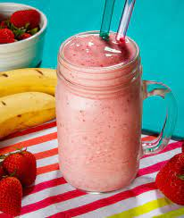

Strawberry Banana Shake

Description
This is a healthy, versatile protein milk shake perfect for a post-workout meal, or healthy alternative to an ice cream shake for the kids. Strawberries and banana could be substituted with kiwi, pineapple, pears, mango, blueberries, etc. Get creative and enjoy!
Ingredients
- 1 cup skim milk
- 1 scoop vanilla-flavored whey protein powder
- 2 cups ice
- 1 cup strawberries
- 1 large banana
- 1 tablespoon natural peanut butter
Steps
- Layer milk, protein powder, ice, strawberries, banana, and peanut butter in a blender in this order; blend until creamy and smooth.